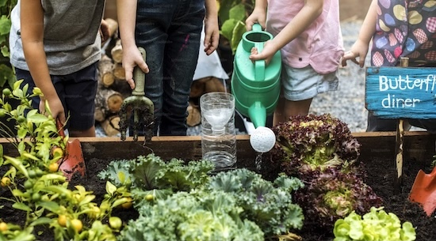
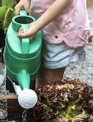
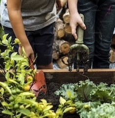

The health benefits of gardening have been well-documented. Being outside increases your exposure to Vitamin D and the weight-bearing exercise of gardening is good for bones and the heart. Digging, planting, watering, and weeding all help improve strength, endurance, and flexibility. With all that physical activity, you will probably be tired out after just a few hours of gardening – never mind a full day. Later that night, you might even sleep better! One study even found that gardening decreases your risk of dementia! Gardening also promotes healthier eating. Growing your own fruits and vegetables gives you direct access to fresh, organic produce. You know exactly what goes into your food, and it encourages you to eat more nutritious, seasonal meals.
Gardeners can continue to grow plants and enjoy the hobby even as they get older. Some modifications may need to be made by raising beds to an easier height or going from a huge vegetable garden to a few containers, but the garden is endlessly adaptable. It also saves you money in the long term. While there’s an initial investment, growing your own food can save you money over time. A packet of seeds can produce pounds of fresh produce for a fraction of the store cost. With supply chains under strain, having a garden gives you control over your own food source. It’s empowering and practical.

I don’t know about you, but I always feel a little bit settled after a round of weeding or a half-hour or more spent planting or harvesting. It turns out it’s in the dirt. One study found that exposure to a bacteria common in soil increases levels of serotonin, the chemical that increases feelings of well-being. When you spend time outside in the garden, you will also naturally get more sunlight, which increases Vitamin D absorption and can lower blood pressure. Spending time in the garden reduces stress, improves mood, and can help fight anxiety and depression. Gardening has even been shown to lower cortisol levels in the body. Coupled with the creativity and personal expression gardening lets you explore, watching something you planted grow and flourish can be deeply satisfying.
As more wild areas are disrupted for development, gardens become important places for water to be filtered or carbon to be sequestered by trees. A recent study from the Smithsonian Institution highlighted the importance of native plants and native gardens particularly in maintaining the health of birds, bees and other insects. Reducing your reliance on store-bought produce helps cut down on packaging and transportation emissions. Home gardens promote local biodiversity and can be a haven for these pollinators. Plants absorb carbon dioxide and produce oxygen, improving air quality and mitigating the effects of climate change. Gardens can also help cool urban areas and reduce the urban heat island effect. Incorporating earth-friendly gardening practices can go a long way. Here are some tips to get started:

When children are given a chance to grow their own food, they feel a great sense of accomplishment. They love sharing the food with others and teaching others about gardening. It also teaches them about growing plants, choosing healthy food, and working towards a long-term goal. They might even become interested in garden technology, such as irrigation systems or hydroponic systems. Also, gardening helps forge relationships between generations. How many gardeners learned at the elbow of a parent or grandparent? Gardening teaches kids about nature, responsibility, and where food really comes from. Gardening with kids also provides them with the needed sensory input for calm, happy bodies and minds. It’s hands-on learning they’ll remember for a lifetime.
I love a front yard garden and one reason is that folks stop by to chat when you have a garden. Gardens inspire conversation and they build connections between neighbors. Garden clubs are a great way to share information and connect with folks who love plants just as much as you do! Sharing seeds, surplus veggies, or gardening tips builds relationships. Community gardens, in particular, are great ways to meet neighbors and grow together. Starting or joining a community garden can be a rewarding endeavor, fostering community spirit, promoting healthy eating, and beautifying neighborhoods. With careful planning and community involvement, these gardens can thrive and become a cherished local asset. Use the following link to find community gardens in your area! Find a Garden!